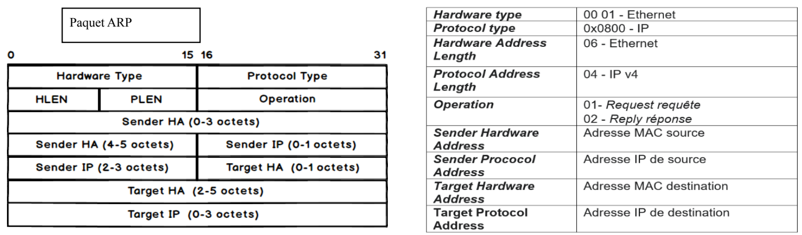

Réseaux · Corrigé · TD 2
Corrigé rédigé à partir des cours 2 et 3.
Les décodages et calculs ont été vérifiés.
08 06 = ARP) · puis le paquet ARP : 2 hardware type · 2 protocol type · 1 HLEN · 1 PLEN · 2 opération (1 = requête, 2 = réponse) · 6 MAC émetteur · 4 IP émetteur · 6 MAC cible · 4 IP cible.81 = 8 × 16 + 1 = 129 ; 68 = 104 ; FE = 254.

1. Trame 1 et trame 2
| Champ | Trame 1 | Trame 2 |
|---|---|---|
| MAC destination | FF:FF:FF:FF:FF:FF (broadcast) | 08:00:20:02:45:9E |
| MAC source | 08:00:20:02:45:9E | 08:00:20:07:0B:94 |
| Type | 08 06 → ARP | 08 06 → ARP |
| Hardware / protocol type | 00 01 Ethernet / 08 00 IP | 00 01 Ethernet / 08 00 IP |
| HLEN / PLEN | 6 / 4 | 6 / 4 |
| Opération | 00 01 → requête | 00 02 → réponse |
| MAC émetteur | 08:00:20:02:45:9E | 08:00:20:07:0B:94 |
| IP émetteur | 81 68 FE 06 → 129.104.254.6 | 81 68 FE 05 → 129.104.254.5 |
| MAC cible | 00:00:00:00:00:00 (inconnue) | 08:00:20:02:45:9E |
| IP cible | 81 68 FE 05 → 129.104.254.5 | 81 68 FE 06 → 129.104.254.6 |
2. Trame ARP à analyser, et réponse renvoyée
80 DE 0C 01 = 128.222.12.1, demande la MAC de 80 DE 0C 02 = 128.222.12.2.| MAC dest | MAC source | Type | HW | Proto | HLEN PLEN | Op. |
|---|---|---|---|---|---|---|
| 00 40 05 13 65 80 | 00 40 05 10 93 71 | 08 06 | 00 01 | 08 00 | 06 04 | 00 02 |
| MAC émetteur | IP émetteur | MAC cible | IP cible | |||
| 00 40 05 10 93 71 | 80 DE 0C 02 | 00 40 05 13 65 80 | 80 DE 0C 01 | |||
1. Message 0011111101, g(x) = x2 + x + 1
111, degré 2 → on ajoute 2 zéros.
0 0 1 1 1 1 1 1 0 1 0 0 ← message + 00 ^ 1 1 1 0 0 0 0 0 1 1 1 0 1 0 0 ^ 1 1 1 0 0 0 0 0 0 0 0 0 1 0 0 ^ 1 1 1 0 0 0 0 0 0 0 0 0 0 1 1 → CRC = 11Message codé :
0011111101 11. Les zéros de tête du message ne changent rien : on place g sous le premier 1.
2. Mot reçu 101011000110, g(x) = x6 + x4 + x + 1
1010011 (x6 x5 x4 x3 x2 x1 x0), degré 6. On divise le mot reçu tel quel :
1 0 1 0 1 1 0 0 0 1 1 0 ← mot reçu ^ 1 0 1 0 0 1 1 0 0 0 0 1 0 1 0 0 1 1 0 ^ 1 0 1 0 0 1 1 0 0 0 0 0 0 0 0 0 0 0 0 → reste 000000a. Reste nul : transmission correcte (aucune erreur détectée).
000110) : le message émis est 101011.
64 bytes from 193.93.28.7. icmp_seq=0 ttl=255 time=0.7ms 1 packet transmitted, 1 packet received, 0 % packet loss
icmp_seq=0 est le numéro de séquence de la requête d'écho : c'est la première (0), ce qui permet d'associer chaque réponse à sa requête.1 193.51.91.1 1 ms 1 ms 1 ms 2 2.0.0.1 23 ms 23 ms 23 ms 3 11.6.1.1 105 ms 35 ms 35 ms 4 11.6.13.1 37 ms 35 ms 34 ms 5 189.52.80.1 37 ms 60 ms 36 ms 6 193.48.58.41 51 ms 39 ms 46 ms 7 193.48.53.49 39 ms 47 ms 44 ms 8 193.220.180.9 44 ms * * 9 195.48.58.43 48 ms 38 ms 44 ms 10 195.48.58.50 145 ms 1706 ms 64 ms 11 194.206.207.18 61 ms 146 ms 44 ms 12 194.207.206.5 166 ms 261 ms 189 ms
Avec les masques par défaut (classes)
| Adresse IP | 124.23.12.71 | 124.12.23.71 | 194.12.23.71 |
|---|---|---|---|
| Classe | A (124 ≤ 127) | A | C (192 ≤ 194 ≤ 223) |
| Adresse du réseau | 124.0.0.0 | 124.0.0.0 | 194.12.23.0 |
| Adresse de diffusion | 124.255.255.255 | 124.255.255.255 | 194.12.23.255 |
Avec les masques imposés
| Adresse IP | 124.23.12.71 | 124.12.23.71 | 194.12.23.71 |
|---|---|---|---|
| Masque | 255.0.0.0 | 255.255.255.0 | 255.255.255.240 |
| Adresse du sous-réseau | 124.0.0.0 | 124.12.23.0 | 194.12.23.64 |
| Diffusion | 124.255.255.255 | 124.12.23.255 | 194.12.23.79 |